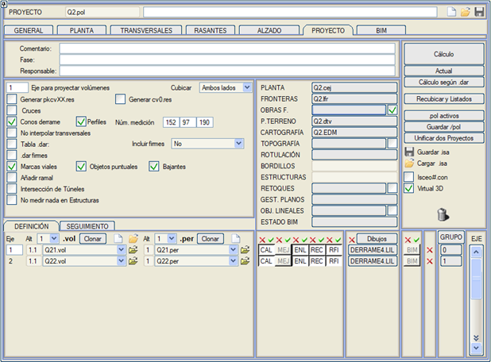
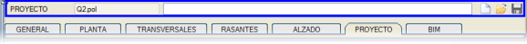
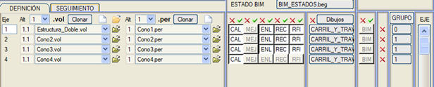
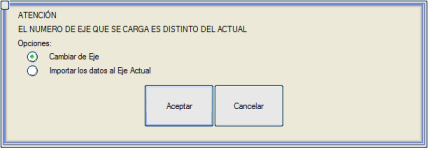
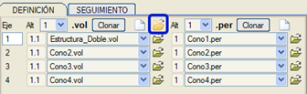
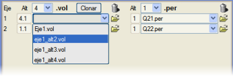
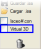
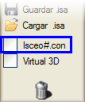
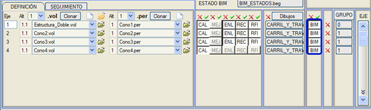
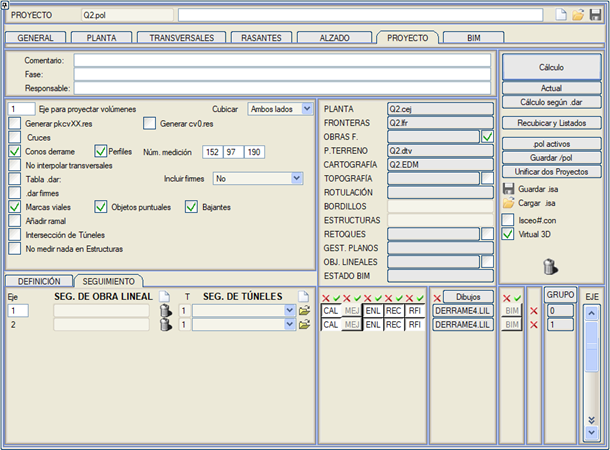

| |
|
PROJE MENÜSÜ
|
PROJE seçeneği (aynı zamanda proje tablosu olarak da adlandırılır) , projenin tanımında yer alan tüm veri dosyaları hakkındaki bilgileri içeren iletişim kutusunu açar. Bu iletişim kutusuna doğrudan BOYKESİT sekmesinin yanındaki sekmeden erişilebilir. Aşağıda, genel hesaplamada içerdiği ve kontrol ettiği tüm seçenekler ve kavramlar açıklanmaktadır. 
Proje dosyaları (.pol)
Menünün genel seçenekleri Her eksene ilişkin dosya, veri ve hesaplama seçenekleri Proje verilerini yükle ve kaydet VIRTUAL 3D® modülüne veri aktarımı ISTRAM®/ISCEO® programına veri aktarımı Bütçe dosyalarının oluşturulması BIM Oluşturma Doğrusal Yapı İmalat Takibi ve Tünel Takibi Proje dosyaları (.pol) .pol dosyaları, bir doğrusal yapı projesinin dosya yapısının bir parçasını oluşturur ve tasarımın herhangi bir aşamasında oluşturulabilir, yüklenebilir ve kaydedilebilir, çünkü yönetimi açılır menünün üst kısmından kontrol edilir: 
Menünün genel seçenekleri
Her eksene ilişkin dosya, veri ve hesaplama seçenekleri Proje tablosunun alt kısmında, her eksen için ilişkili boykesit tanım dosyası .vol ve arazi enkesit dosyası .per gösterilir. Bu dosya adı, BOYKESİT menüsünden bir .vol kaydedildiğinde veya yüklendiğinde, BOYKESİT'ten bir .per yüklendiğinde veya enkesitler oluşturulduğunda otomatik olarak değiştirilir. Her durumda, dosya mevcut alternatif ile ilişkilendirilecektir. [o] düğmeleri, tüm .vol / .per dosyalarını kaldırmayı sağlar. 
Bu menü, her eksene ilişkin dosyaları değiştirmeyi ve bunları aynı eksenin farklı alternatifleriyle ilişkilendirmeyi de mümkün kılar. Mevcut alternatif, Alt sütununda gösterilen alternatiftir.  düğmesine basıldığında, program kullanıcının istediği dosyayı seçmesi için dosya seçiciyi gösterir. Hiçbiri seçilmezse, o zaman eksenin o alternatifi
ilgili verilere sahip olmayacaktır. Yüklenirken, .vol veya .per dosyalarının eksen numarasının mevcut eksenle eşleşip eşleşmediği kontrol edilir, aksi takdirde kullanıcıdan onay istenir: düğmesine basıldığında, program kullanıcının istediği dosyayı seçmesi için dosya seçiciyi gösterir. Hiçbiri seçilmezse, o zaman eksenin o alternatifi
ilgili verilere sahip olmayacaktır. Yüklenirken, .vol veya .per dosyalarının eksen numarasının mevcut eksenle eşleşip eşleşmediği kontrol edilir, aksi takdirde kullanıcıdan onay istenir:
Aşağıdaki resimde görülen kutucuk aracılığıyla, her birinin ilgili eksenine eklenecek şekilde aynı anda birkaç .vol dosyası (255'e kadar) yükleme imkanı verilir. Bunlardan herhangi biri mevcut eksene karşılık geliyorsa, tüm verileri de yüklenir. Aynı eksenden birkaçı seçilirse, son seçilen yüklenir. 
HESAPLAMALAR sütununda, hangi hesaplamaların ve hangi eksenlerin yapılacağı belirtilir:
düğmeleri, bir sütunun tüm hesaplamalarını sırasıyla devre dışı bırakmayı ve etkinleştirmeyi sağlar. Her eksen ayrıca, yatay güzergah çizimi için bir .lil çizim moduyla da ilişkilidir. [Çizimler] düğmesi, tüm eksenler için aynı .lil yatay güzergah çizim modu dosyasını seçmeyi sağlar. Yanındaki düğmesiyle tüm eksenlerin çizim modları kaldırılır. Bir eksen için bir .lil çizim modu seçildiğinde, bu mod 'canlı' kalır, böylece başka bir eksen için .lil kutucuğuna tıklandığında, kütüphaneden yeniden seçmeye gerek kalmadan doğrudan ilişkilendirilir. Aynı tuşa ikinci bir tıklama, kütüphaneye yeniden erişim sağlar. Ayrıca, iletişim kutusundaki başka bir kutucuğa tıklandığında veya <Esc> tuşuna basıldığında seçenek devre dışı bırakılır. GRUP sütunundan, eksenin hangi gruba ait olduğu gösterilir ve aktif olup olmadığı belirtilir. Sütun adına veya gruplardan herhangi birine tıklandığında gruplar iletişim kutusuna geçilir. ÇİZİMLER ve GRUP sütunu arasında, her eksen için, ilgili satırdaki eksendeki tüm hesaplamaları ve çizimi devre dışı bırakan bir [o] düğmesi gösterilir. [Hesaplama] düğmesi, aktif bir grupta bulunan tüm eksenler için tüm aktif [HES], [İYİ], [BAĞ], [YEN.MET] ve [YEN.ÜSTY] seçeneklerini ve yatay güzergah çizimini çalıştırır. [Mevcut] düğmesi, [Hesaplama] ile tamamen aynı şekilde çalışır, ancak sadece eksenler listesinin başındaki eksen için. Eğer [BAĞ] tuşu basılıysa, bu eksenin sınır çizgileriyle kırpılmasını da gerçekleştirir. Bu seçenek, o eksende tanımlanan hemzemin kavşakları da hesaplar. [.dar'a göre Hesapla] düğmesi, her birinin .vol dosyasında bildirdiği .dar tablosuna göre eksenleri geçici olarak gruplandırır (.dar'a göre Grupla aracının yaptığı gibi) ve bu grupların her biriyle bir proje hesaplaması gerçekleştirir. Bu hesaplamaların her birinin listeleri, grubun kullandığı .dar tablosunun adıyla res klasörünün bir alt klasöründe arşivlenir. Eğer hacimleri yansıtma ekseni hesaplanan grupta değilse, grubun ilk ekseni kullanılır.  düğmesi, [Hesaplama] seçeneği tarafından çizilen son yatay güzergahı siler. düğmesi, [Hesaplama] seçeneği tarafından çizilen son yatay güzergahı siler.Proje alternatifleri Her eksen, on adede kadar farklı .per dosyası ve dört farklı .vol dosyası ile ilişkilendirilebilir; her bir açılır menünün yanında hangi alternatife ait olduğu gösterilir. Bu şekilde, her eksen seçilen alternatife bağlı olarak farklı şekillerde hesaplanabilir. .vol dosyası alternatifleri durumunda, numaraları i.j şeklinde temsil edilir; i, .vol dosyası alternatif numarasını ve j, o .vol dosyasında kullanılan kırmızı kot alternatif numarasını belirtir. Bu şekilde, 3.2, 3. .vol dosyası alternatifinin kullanıldığı ve o dosyadan 2. kırmızı kot alternatifinin kullanıldığı şeklinde yorumlanır. Üst kısımda ve Alt sütununun başlığının yanında, tüm eksenler için aynı alternatif numarasını seçmeyi sağlayan küçük bir açılır menü gösterilir.  Bir alternatifin tüm .vol dosyalarını başka bir alternatife klonlama imkanı vardır. [Klonla] düğmesine basıldığında, kaynak alternatifin dosyaları, alternatif numarasını belirten bir sonek eklenerek hedef alternatife kopyalanır. Örneğin, ISPOL1.vol dosyası 4. alternatife klonlanırsa, klonlanan dosya ISPOL1_a4.vol olarak adlandırılacaktır. Bir alternatifin tüm .vol dosyalarını başka bir alternatife klonlama imkanı vardır. [Klonla] düğmesine basıldığında, kaynak alternatifin dosyaları, alternatif numarasını belirten bir sonek eklenerek hedef alternatife kopyalanır. Örneğin, ISPOL1.vol dosyası 4. alternatife klonlanırsa, klonlanan dosya ISPOL1_a4.vol olarak adlandırılacaktır.Unutulmamalıdır ki:
Proje verilerini yükle ve kaydet [Kaydet /pol] düğmesi, bir projenin tüm verilerinin ayrı ayrı kaydedilmesini sağlar. Bu komut, içeriğinin kaydedilen dosyalarla her zaman tutarlı olması için önceden bildirilen .pol dosyasını kaydeder. Bu dosya yoksa, ispol.pol adıyla bir tane oluşturulur. Daha sonra, çalışma klasörü içinde pol adlı bir alt klasör oluşturulur ve PROJE tablosunda bildirilen .pol, .cej, .dof, .lfr, .edm, .top/.toc/.ttp, .vol ve .per dosyaları buraya kopyalanır. Bu alt klasör içinde ayrıca, aşağıdaki dosyaları içeren lib adlı başka bir klasör oluşturulur:
Bu komut ayrıca, fichero.pol adlı bir proje için fichero_pol olarak adlandırılacak ikinci bir klasör oluşturur ve bu, farklı projeleri veya farklı sürümleri veya durumları ayrı ayrı kaydetmeyi sağlar. Bu klasörde ayrıca, aşağıdaki dosyaların kopyalandığı üç yeni alt klasör oluşturulur (varsa veya hesaplanmışsa): proje_pol/enkesitler/
ISPOL#.per (hesaplanan tüm eksenler için) ISFIR#.per (hesaplanan tüm eksenler için) proje_pol/listeler/ ceje0.res (tüm eksenlerin yatay güzergah listesi) rasa0.res (tüm eksenlerin kırmızı kot durumu) rasa#.res (her eksenin kırmızı kot durumu ve boykesitteki eksen noktaları) proje_pol/metrajlar/ cvoltot.res (toplam hacimler) cvolgru.res (gruplara göre hacim özeti) cvolejes.res (eksenlere göre hacim özeti) cvol#.res (her eksenin hacimleri) firmetot.res (toplam hacimler) firmgru.res (gruplara göre hacim özeti) firmejes.res (eksenlere göre hacim özeti) firm#.res (her eksenin hacimleri) desbr#.res (her eksene göre sıyırma kazıları) aresastot.res (eksenlere göre sıyırma kazıları ve şev ince tesviyesi özeti) [.pol aktif] seçeneği ile, sadece aktif gruplarda bulunan eksenlerin bilgilerini (.vol, .per, hesaplamalar, çizimler) içeren bir .pol dosyası oluşturulur. Klasör adı istenir. İki Projeyi Birleştir Bu seçenek iki projeyi birleştirmeyi sağlar, Yatay Güzergah menüsünün Araçlar bölümünden erişilenle aynıdır. .isa Arşiv Dosyaları  Bu format, proje dosyalarını tek bir ikili ve belirli bir sıkıştırma seviyesine sahip dosyada kaydetme imkanı sunar, bu da çok kullanışlıdır ve dolayısıyla bir projeyi kaydederken en çok tavsiye edilen seçenektir. Bu format, proje dosyalarını tek bir ikili ve belirli bir sıkıştırma seviyesine sahip dosyada kaydetme imkanı sunar, bu da çok kullanışlıdır ve dolayısıyla bir projeyi kaydederken en çok tavsiye edilen seçenektir.Bu dosya şunları içerir:
Eğer Yapılandırma->Tercihler->Topografya: [ ] TTP/TTG Yolunu .csm ve .ctp'de Kaydet seçeneği etkinse ve aynı anda Proje:[ ] SAM yüzey kontrolüne dahil edilen tüm TTP/TTG dosyalarını ekle seçeneği etkinse, o zaman bir .isa kaydedilirken yerel klasörden veya ttp alt klasöründen farklı bir yola sahip dosyalar da dahil edilir. Bir .isa açıldığında, bu dosyalar ttp klasörüne yerleştirilir, böylece oluşturulduğu aynı bilgisayardaysak orijinal yoldan okunabilirler, ancak başka bir bilgisayardaysak ttp klasöründen okunurlar. Virtual3D modülüne veri aktarımı Bu seçenek etkinleştirildiğinde, fotogerçekçi temsil ve animasyon modülü Virtual3D®'nin, projenin tüm aktif eksenlerine ve ilgili dokularına, modül içinde içe aktarmaya gerek kalmadan doğrudan sahip olması için gerekli tüm dosyalar oluşturulur. ISTRAM®/ISCEO® programına veri aktarımı PROJE iletişim kutusundan, ISTRAM®/ISCEO® programı ile veri alışverişi için Isceo#.con dosyasını oluşturma seçeneği vardır. Bu, bu uygulama sayesinde proje verilerinin imalat kontrolü ve kalite yönetiminde kullanılmasını sağlar. Bütçe dosyalarının oluşturulması Bir projenin hesaplanması, biri toprak işleri ve diğeri üstyapı için olmak üzere, bütçeler için kullanılabilecek bir çift *.bc3 dosyasının oluşturulmasını içerir. BIM Oluşturma Proje menüsünde (Doğrusal Yapı içinde), bu aynı menünün "Hesaplama" veya "Mev. Proje Hes." seçeneğinden hesaplandığında o eksenin BIM bilgilerini otomatik olarak oluşturmasını belirtmek için eksen başına bir kutucuk bulunmaktadır. Varsayılan olarak kutucuklar devre dışıdır. Kutucukların aktivasyonu projeyle birlikte .pol dosyasında saklanır. 
Doğrusal Yapı İmalat Takibi ve Tünel Takibi Bu sekmede, sırasıyla imalat takibi ve tünel takibi menülerinde hesaplanan enkesit dosyalarını ilişkilendirmeye izin verilir. Bu enkesitlerin BIM modeli elde edilebilir. 
TÜNEL TAKİBİ sütunundan, kullanıcının tercihine göre çeşitli .per dosyaları yüklenebilir. |